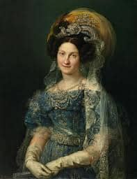

Em 1715, o pensador casou-se com Jeanne de Lartigue, tendo com a esposa três filhos.
filhos de montesquieu|
Marie-Catherine de Secondat
|Marie-Josèphe-Denise de Secondat
|Jean Baptiste de Secondat
Jeanne de Lartigue
Nascimento: 1689
Falecimento: 13 de julho de 1770, Bordéus, França
Apenas um ano após o seu casamento, Charles herdou, em razão do falecimento de sua mãe, o título que havia sido de seu pai, o Barão de Montesquieu, o que lhe rendeu também o direito sobre as terras equivalentes ao baronato e um cargo no Parlamento de Bordeaux.
Era fato que Montesquieu não precisaria mais trabalhar. Então ele passou a administrar sua fortuna e a estudar ciências da natureza, filosofia e direito. Com os escritos de seus estudos, vieram também escritos literários. Em 1721, Montesquieu concluiu a escrita das Cartas Persas
Em 1728, após Montesquieu deixar a Câmara de Bordeuax por vontade própria e partir rumo a Paris, ele ingressou na Academia FrancesaNo entanto, Montesquieu foi eleito e se tornou um dos imortais da instituição.
A partir de 1728, o filósofo passou a viajar pela Europa a fim de aprimorar-se intelectualmente, conhecendo novos filósofos, escritos, pensamentos e lugares
O pensador passou pela Áustria, pela Hungria, pela Itália e pela Inglaterra. Na Inglaterra estabeleceu-se por um tempo, até 1731, onde se tornou membro da Academia Real e entrou para a maçonaria. Ele retornou ao Castelo de La Brède e ficou recluso até 1734, escrevendo diariamente. Esse retiro intelectual deu origem a três escritos